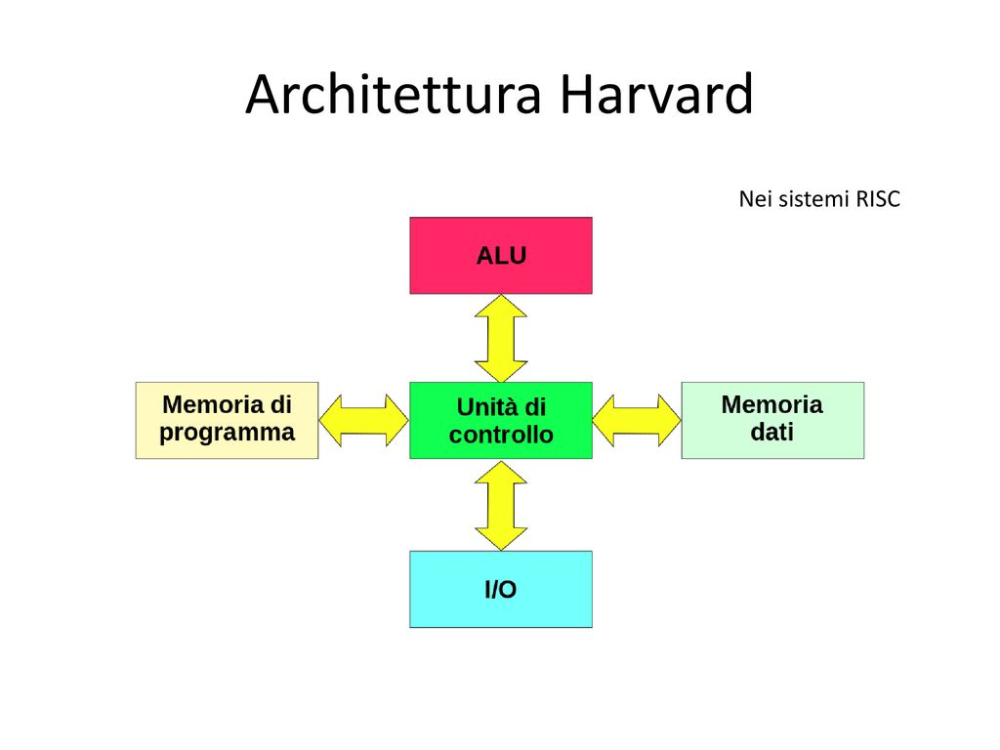

Le architetture non Von Neumann rappresentano un paradigma alternativo all’architettura di Von Neumann, che è il modello su cui si basano la maggior parte dei computer moderni. Queste architetture sono state sviluppate per superare i limiti della classica organizzazione di un computer, migliorando prestazioni, efficienza energetica e capacità di elaborazione parallela.
Eliminazione del collo di bottiglia: Nelle architetture non von Neumann, il collo di bottiglia tra CPU e memoria viene ridotto. Questo permette un flusso di dati più veloce ed efficiente.
Memorie separate o integrate: Alcuni modelli, come l'architettura Harvard, usano memorie separate per dati e istruzioni, permettendo alla CPU di accedere a entrambe in parallelo.
Parallelismo: Utilizzano spesso più unità di calcolo che lavorano contemporaneamente, permettendo di eseguire più operazioni allo stesso tempo (ad esempio nelle GPU o nei supercomputer).
Architettura Harvard:
Architettura a Flusso di Dati (Dataflow)